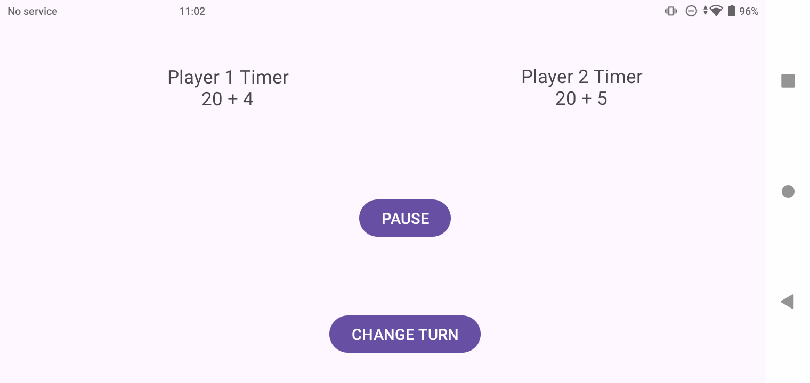
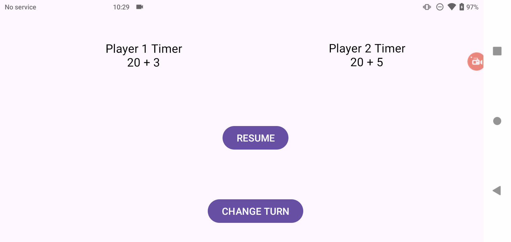
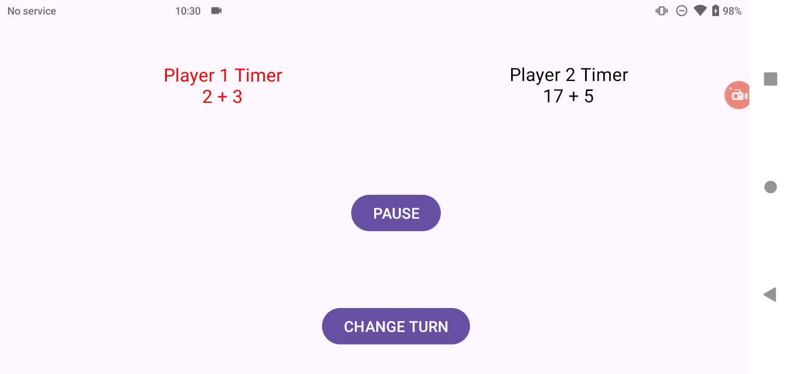
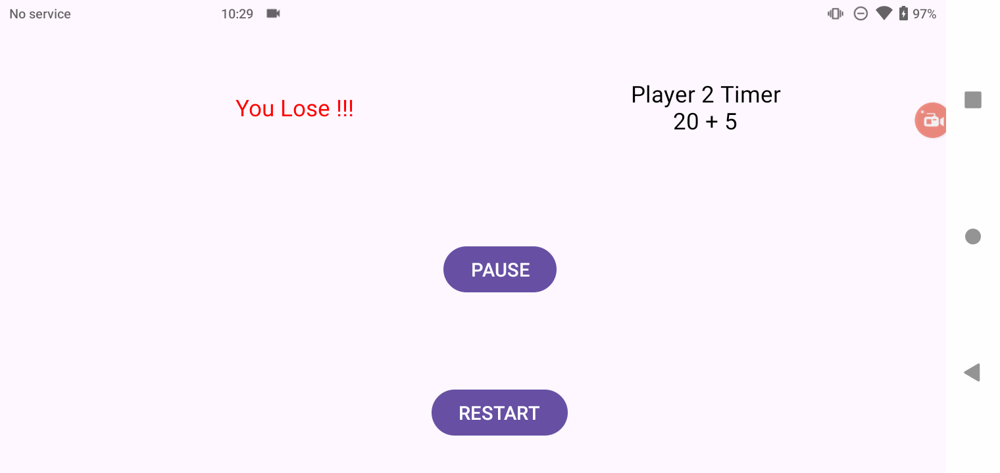

雀魂風タイマー
本制作物は2人対戦用のボードゲームをプレイする際，制限時間を設けることを目的として作成しました．
開発期間: 3日
開発環境: Android Studio Koala | 2024.1.1
開発言語: Kotlin
APIレベル: 24
利用想定デバイス: Android 7.0以降の端末
動作確認環境: Rakuten Hand 5G (Android 11)
ステップ数:
- Kotlin: 180行
- xml: 684行
詳細
はじめに
まず，雀魂におけるタイマーの仕組みを説明します．
雀魂では各プレイヤーが5秒と20秒の持ち時間を持っており，5秒タイマー → 20秒タイマーの順で消費されます．
5秒タイマーは毎ターン5秒に戻りますが，20秒タイマーは一度消費すると次のターン以降も消費した分だけ引き継がれて始まります．
今回作成したアプリでは，この雀魂におけるタイマーの仕組みを用いることによって，2人対戦用のボードゲームで遊ぶ際，思考時間に制限を加えることを目的としています．
仕様
まず，デモ動画を以下に示し，以降で細かい仕様について説明します．
タイトル画面
初期画面を以下に示します．
STARTを押すとタイマーが開始します．
タイマー画面
以下の画像はタイマーが開始した画面です．
左側がプレイヤー1，右側がプレイヤー2の画面となっています．
各プレイヤーの画面に表示された時間は残り時間を表示しており，別のプレイヤーにターンを渡したり，タイマーを一時停止したりできます．

-
一時停止ボタン
全てのタイマーを一時停止することができます．

以下に一時停止中の画像を示します． RESUMEボタンを押すことによって再開することができます． -
ターン交代ボタン
プレイヤーのターンを交代することができます．
-
警告表示
プレイヤーの持ち時間が5秒以下になった時，タイマーを赤字で表示します．

実際に警告表示されている様子を以下に示します． -
ゲームオーバー表示
どちらかのプレイヤーがタイマーを使い切った時の画面です．

負けた方のプレイヤーに敗北を知らせるテキストを表示しています．
また，RESTARTボタンを押すことでもう一度タイマーを最初から始めることができます．
以下にその画像を示します．
今後の予定
以下の機能の追加や改善が予定されています:
- 交代ボタンを両プレイヤーの画面に表示し、そのプレイヤーのターンだけ常に片方のみ表示させる
- いつでもリセットできるボタンの追加
- タイトル画面において20秒タイマーと5秒タイマーの時間を調整できるように変更
- 3人以上のボードゲームへの対応